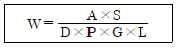
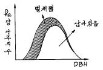
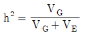

임업종묘기사 (2003-08-10 기출문제)
1과목: 조림학
1. 제벌작업(除伐作業)을 가장 정확하게 설명한 것은?
- 목적이외의 수종이나 형질이 불량한 임목을 제거하는 것이다.
- 조림 후 임목이 성장하여 밀식된 임목을 벌채하는 것이다.
- 조림 후 병해충의 피해를 받은 임목만 벌채하는 것이다.
- 맹아력이 강한 수종만을 골라 벌채하는 것이다.
(정답률: 알수없음)

2. 다음 중 우리나라 온대림의 대표 수종은?
- 멀구슬나무
- 후박나무
- 이깔나무
- 참나무류
(정답률: 알수없음)
3. 비료목으로 적합한 수종은?
- 오동나무, 동백나무
- 아카시나무, 오리나무
- 소나무, 밤나무
- 대나무, 가문비나무
(정답률: 알수없음)
4. 침엽수와 활엽수의 씨젖(배유)은 염색체 구성이 다른 것이 가장 큰 특징의 하나라고 할 수 있다. 다음 중 침엽수 씨젖(배유)과 활엽수 씨젖(배유)의 염색체 구성을 바르게 서술한 것은?
- 침엽수 씨젖(배유)(2n), 활엽수 씨젖(배유)(n)
- 침엽수 씨젖(배유)(3n) 활엽수 씨젖(배유)(n)
- 침엽수 씨젖(배유)(n), 활엽수 씨젖(배유)(3n)
- 침엽수 씨젖(배유)(n), 활엽수 씨젖(배유)(n)
(정답률: 알수없음)
5. 측방천연하종갱신에서 교호대상(帶狀)개벌시 일반적으로 대상 벌채구의 폭은 어느 정도로 하는가?
- 모수림 수고의 8-9배
- 모수림 수고의 6-7배
- 모수림 수고의 5-6배
- 모수림 수고의 2-3배
(정답률: 알수없음)
6. 다음 중 가지치기의 효과로 볼 수 없는 것은?
- 무절(無節)의 완만재의 생산
- 하목(下木)의 보호 및 생장촉진
- 삼림의 위해를 예방
- 개화결실의 촉진
(정답률: 알수없음)
7. 산벌작업의 갱신기간에 관한 설명 중 옳지 않은 것은?
- 종자 풍산(豊産)의 해가 빈번히 오는 경우에는 갱신 기간이 길어진다.
- 양수(陽樹)는 음수(陰樹)보다 갱신기간이 짧아진다.
- 윤벌기(輪伐期)가 긴 것은 짧은 것보다 갱신기간이 길다.
- 외계(外界)에 대한 저항력이 큰 수목은 약한 수목보다 갱신기간이 짧다.
(정답률: 알수없음)
8. 산성땅에서 좋은 자람을 보이는 것은?
- 진달래, 소나무
- 플라타너스, 단풍나무
- 호두나무, 백합나무
- 물푸레나무, 오리나무
(정답률: 알수없음)
9. 1년생 묘목을 판갈이(床替)하면 고사율이 높은 수종은?
- 소나무
- 신갈나무
- 낙엽송
- 해송
(정답률: 알수없음)
10. 다음 공식은 종자 m2당 파종량을 산정하기위한 공식이다. A x S를 옳게 설명한 것은?

- 파종면적에 m2당 묘목의 잔존본수를 곱한 값이다.
- 종자입수에 파종 면적을 곱한 값이다.
- 순량율과 발아율을 곱한 값이다.
- 순량율과 발아세를 곱한 값이다.
(정답률: 알수없음)
11. 다음 수목 중 자웅이주가 아닌 것은?
- 소나무
- 은행나무
- 꽝꽝나무
- 사시나무
(정답률: 알수없음)
12. 광합성에 의해 유기물이 만들어지는 과정은?
- glucose 혹은 fructose - sucrose - starch - cellulose
- sucrose - glucose 혹은 fructose - starch -cellulose
- starch - sucrose - cellulose - glucose 혹은 fructose
- cellulose - glucose 혹은 fructose - sucrose - starch
(정답률: 알수없음)
13. 묘간거리, 열간거리가 동일한 경우 정삼각형 식재는 정방형 식재보다 얼마 더 식재할 수 있는가?
- 3%
- 15%
- 30%
- 40%
(정답률: 알수없음)
14. 윤벌기와 함께 회귀년 이란 말이 쓰여지는 작업종은?
- 산벌작업
- 중림작업
- 모수작업
- 택벌작업
(정답률: 알수없음)
15. 간벌율을 결정하는 기준으로 사용되는 용어가 아닌 것은?
- 주수율
- 재적율
- 수광율
- 흉고 단면적율
(정답률: 알수없음)
16. 양묘시 묘목을 이식이나 단근(斷根)하는 이유 중 가장 타당성이 있는 것은?
- 근계 발달을 좋게하여 산지이식 후 묘목 활착을 좋게하기 위함이다.
- 모든 묘목의 곧은뿌리의 발달을 촉진하기 위해서 꼭 실시해야 한다.
- 도장묘 발생을 위해서 묘목 출하시 중량이 적게 나가기 위함이다.
- 묘목 주변의 잡초 제거를 할 필요가 없기 때문에 행한다.
(정답률: 알수없음)
17. 일반적으로 연료재와 소경재, 일반용재를 동일임지에서 생산하는 삼림작업종은?
- 군상개벌법
- 택벌작업법
- 중림작업법
- 왜림작업법
(정답률: 알수없음)
18. 화기(花器)의 구조와 종자 및 열매의 구조관계를 바르게 연결한 것은?
- 씨방(자방) - 종자
- 배주 - 열매
- 주피 - 종피
- 주심 - 배
(정답률: 알수없음)
19. 삼림 작업종 분류의 기준(또는 기초)이 될 수 없는 것은? (단, 대나무는 제외함)
- 벌채면의 크기
- 수종 또는 품종
- 벌채 종류
- 벌채면의 모양
(정답률: 알수없음)
20. 다음 그림은 갱신벌채에 있어서 벌채된 나무의 부분을 보이는 것이다. 다음 설명 중 이 그림의 내용에 가장 적당한 것은? (단, 벌채되기전 1ha에서 있었던 나무의 수는 1200그루였다.)

- 모수작업 실시 후
- 산벌갱신의 하종벌 실시 후
- 택벌작업 실시 후
- 대상개벌 실시 후
(정답률: 알수없음)
2과목: 임목육종학
21. 소나무의 종자는 수분된 후 몇 개월만에 성숙되는가?
- 5개월
- 13개월
- 18개월
- 23개월
(정답률: 알수없음)
22. 강원도 지방에서 소나무 수형목 50 그루를 선발하여 그 후대(後代)를 양성하고 모아서 채종원을 조성하여 우량종자를 얻는 작업을 하였다. 이러한 육종 방법은?
- 집단 선발 육종법
- 개체 선발 육종법
- 교잡육종법
- 영양계 선발육종법
(정답률: 알수없음)
23. 제 1세대 채종원으로부터 차대검정 결과에 따라 불량수형목을 제거한 채종원을 무엇이라고 하는가?
- 1.5세대 채종원
- 2세대 채종원
- 2.5세대 채종원
- 3세대 채종원
(정답률: 알수없음)
24. 특수 조합능력이 큰 개체간에 교잡을 하였을 때에는 다음 중 무엇이 생기기 쉬운가?
- 배수체(倍數體)가 생기기 쉽다.
- 헤테로시스(Heterosis)가 생기기 쉽다.
- 변이체(變異體)가 생기기 쉽다.
- 반수체(半數體)가 생기기 쉽다.
(정답률: 알수없음)
25. 대부분의 식물은 2배체이나 보통, 반수체라 하면 1배체를 말한다. 다음 반수체 대한 설명 중 옳지 않은 것은?
- 반수체는 2배체에 비하여 크기가 작고 생육이 빈약하다.
- 반수체는 불임(不姙)이므로 종자를 맺지 못한다.
- 반수체는 2배체에서 염색체 수가 한 개 혹은 2개가 감소된 개체를 말한다.
- 1배체의 염색체를 배가시키면 유전적으로 동질접합체인 2배체를 얻을 수 있으므로 육종 효율을 높일 수 있다.
(정답률: 알수없음)
26. 수형목의 유전자형을 판별하는데 가장 좋은 방법은?
- 차대검정
- 산지시험
- 효소분석검정
- 표현형 검정
(정답률: 알수없음)
27. 다음 중 영양 생장만이 가능한 수목은?
- 2 배체(2n)수목
- 3 배체(3n)수목
- 4 배체(4n)수목
- 8 배체(8n)수목
(정답률: 알수없음)
28. 다음 기술 중 옳지 않은 것은?
- 한나무의 genotype(유전자형)은 보통 유전자의 구성으로서 나타낼 수 있다.
- 한나무의 phenotype(표현형)은 환경요인의 영향을 받지 않는다.
- phenotype(표현형)은 genotype(유전자형)의 영향을 받는다.
- phenotype(표현형)은 사람의 눈으로 볼 수 있고 느낄 수 있는 것이다.
(정답률: 알수없음)
29. 임목 집단에서 타식에 대한 설명 중 옳지 않은 것은?
- 타식은 유전자형이 서로 다른 개체간 즉 연(緣)이먼 개체간에 교배를 말한다.
- 타식을 하면 유전변이가 높아지므로 환경에 대한 적응성이 높아진다.
- 타식을 하면 대립유전자가 이형접합체가 될 때 초우성이 일어날 수 있다.
- 타식을 하면 집단내에 유전자 구성이 다양하지 못하다.
(정답률: 알수없음)
30. 만약 생식세포가 감수분열을 하지 않고 체세포분열을 한다면 어떤 결과가 생기겠는가?
- 세대를 거듭할수록 더욱 높은 배수체가 된다.
- 배우자의 염색체수는 n이 되고 후대의 염색체수는 2n이 된다.
- 배우자와 후대의 접합자 모두 2n이 된다.
- 감수분열할 때와 마찬가지 결과다.
(정답률: 알수없음)
31. 외국 수종의 도입에 앞서 고려되어야 할 사항 중에서 가장 중요하지 않은 것은?
- 자연분포지에서의 생장과 성질
- 자연분포지에서의 유전적 변이
- 자연분포지와 도입지의 기후의 유사성
- 자연분포지의 크기와 위도
(정답률: 알수없음)
32. 다음은 화분, 난세포, 종자의 유전내용에 관한 것이다. 옳은 것은?
- 한나무에서 나온 화분은 모두 같은 유전자를 갖게된다.
- 한나무에서 나온 난세포는 모두 같은 유전자를 갖게된다.
- 한나무에서 자가수정되어 나온 종자는 모두 같은 유전자를 갖게 된다.
- 한나무에서 나온 화분, 난세포, 종자는 모두 다른 유전자를 갖는다.
(정답률: 알수없음)
33.

는 무엇을 나타내는 식인가? (단, VG : 유전분산, VE : 환경분산)- 넓은 의미의 유전력
- 좁은 의미의 유전력
- 육종의 효과
- 잡종강세
(정답률: 알수없음)
34. 다음 중 채종원에서 개화결실 촉진 효과가 가장 낮은 처리는?
- 환상박피처리
- 단근처리
- 방풍처리
- 비배처리
(정답률: 알수없음)
35. 반형매 차대 검정(half-sib progeny test)란?
- 모수별 풍매 종자의 차대 검정
- 인공 교배 종자의 차대 검정
- 산지별 풍매 종자의 차대 검정
- 혼합 화분의 인공 교배 종자의 차대 검정
(정답률: 알수없음)
36. 동일 종의 경우 건조한 지역 집단을 습한 지역 집단에 비교하여 적응 형질을 설명한 것 중 틀린 것은?
- 생장 지연
- 작은 종자
- 심근성
- 다량의 결실량
(정답률: 알수없음)
37. 세포융합에 의한 임목 육종의 장점은?
- 대형 세포의 기능 증진
- 조직 배양체의 대량 생산
- 유용 물질의 생산
- 불화합성 수종의 교잡
(정답률: 알수없음)
38. 라틴 방격법의 특징은?
- 처리수가 반복수보다 많다.
- 처리수와 반복수는 상관이 없다.
- 반복수가 처리수보다 많다.
- 반복수와 처리수는 항상 같다.
(정답률: 알수없음)
39. Pinus densiflora x Pinus thunbergii는 다음 중 어느 것에 해당 하는가?
- 종내교잡
- 속내교잡
- 종간교잡
- 품종간교잡
(정답률: 알수없음)
40. 일반 조합능력(general combining ability)이란?
- 여러나무와 교잡이 잘되는 일반적인 정도
- 다른 나무들과 교잡하여 일반적으로 우수한 차대를 내는 능력
- 접목할 때 접수와 대목의 친화력
- 자가 불화합성을 나타내지 않고 일반적으로 자가 수정이 가능한 정도
(정답률: 알수없음)
3과목: 산림보호학
41. 흰불나방 방제에 가장 좋은 약제는?
- 메타유제(메타시스톡스)
- 비피유제(밧사)
- 메치온유제(수푸라사이드)
- 디프수화제(디프록스)
(정답률: 알수없음)
42. 아황산가스의 피해로 가장 심하게 손상되는 부분은?
- 목부조직(木部組織)
- 해면조직(海綿組織)
- 통도조직(通導組織)
- 사부조직(篩部組織)
(정답률: 알수없음)
43. 솔나방의 대략적인 산란수는?
- 100 - 300개
- 600개 내외
- 900 - 1000개
- 1500 - 2000개
(정답률: 알수없음)
44. 다음 중에서 수목에 발생하는 전염성병의 원인이 아닌 것은?
- 선충
- 곰팡이
- 대기오염물질
- 파이토플라스마
(정답률: 알수없음)
45. 다음 그림은 녹병균의 겨울포자가 발아한 모습이다. "a"는 어떤 포자인가?
- 담자포자(小生子)
- 녹포자(銹胞子)
- 여름포자(夏胞子)
- 자낭포자(子囊胞子)
(정답률: 알수없음)
46. 잣나무 털녹병균이 잣나무에서 중간기주로 날아가는 포자는?
- 녹병포자
- 여름포자
- 겨울포자
- 녹포자
(정답률: 알수없음)
47. 서남향에서 생육하고 있는 흉고직경 15-20 cm 이상의 수령을 가진 임목에서 많이 나타나는 기상 피해는?
- 한해(寒害)
- 볕데기(皮燒)
- 풍해(風害)
- 설해(雪害)
(정답률: 알수없음)
48. 녹병균 중에서 기주교대(寄主交代)는 다음 어느 경우에 이루어지는가?
- 동종 기생성
- 이종 기생성
- 수종(數種)기생성
- 이주(異株)기생성
(정답률: 알수없음)
49. 솔잎혹파리 유충의 생활 습성을 기술한 것 중 틀리는 것은?
- 잠토시에 부식질이 많은 토양을 좋아한다.
- 한냉에 대한 저항력이 강하다.
- 습기에 대한 저항력은 강하다.
- 건조에 대한 저항력은 강하다.
(정답률: 알수없음)
50. 다음 중 만상(晩霜)의 피해는 어느 것인가?
- 늦가을에 식물생육이 완전히 휴면되기 전에 급격한 온도 저하로 입는 피해
- 가을에 이상 기온으로 조기에 잎이 변색된다.
- 이른 봄에 수목의 발육이 시작된 후 급격한 온도 저하로 입는 상해
- 이른 봄에 수목의 발육이 시작되기전 치수가 고사하는 상해
(정답률: 알수없음)
51. 밤나무 순혹벌의 월동태는?
- 알로 월동
- 유충으로 월동
- 성충으로 월동
- 번데기로 월동
(정답률: 알수없음)
52. 밤나무 줄기마름병의 전파에 가장 중요한 역할을 하는 것은?
- 바람
- 밤나무 순혹벌
- 종자
- 토양
(정답률: 알수없음)
53. 우리나라에서 솔나방은 1년에 몇 회 발생하는가?
- 1회
- 2회
- 3회
- 4회
(정답률: 알수없음)
54. 모잘록병의 병원균이 아닌 것은?
- Armillaria mellea
- Pythium debaryanum
- Rhizoctonia solani
- Fusarium oxysporum
(정답률: 알수없음)
55. 항속임업(恒續林業)을 가장 잘 설명한 것은?
- 식생천이(plant succession)를 이용하여 각종 임목의 생산력을 증대시킨다.
- 성목이 된 것을 계속하여 택벌(擇伐)하는 것이다.
- 낙엽채취를 금하고 하층식생군을 보호하여 생산력을 증대한다.
- 일정한 간격을 두고 목재를 대상(帶狀)으로 수확한다.
(정답률: 알수없음)
56. 성충과 유충이 동시에 잎을 가해하는 해충은?
- 솔잎혹파리
- 거위벌레
- 매미나방
- 오리나무잎벌레
(정답률: 알수없음)
57. 진딧물이나 깍지벌레 등이 기생하는 나무에서 흔히 관찰되는 수목병은?
- 벗나무의 빗자루병
- 수목의 흰가루병
- 수목의 그을음병
- 밤나무의 줄기마름병
(정답률: 알수없음)
58. 항공기에 의한 해충 조사시 나무좀류에 대한 경, 심(輕, 甚)정도의 판정은 몇 등급으로 하는가?
- 2등급
- 3등급
- 4등급
- 5등급
(정답률: 알수없음)
59. 연해(煙害)의 방제법으로 가장 옳은 것은?
- 연해의 염려가 있는 곳은 숲을 교림으로 한다.
- 토양관리에 힘쓰며 특히 인산질비료를 주어야 한다.
- 공해업소의 굴뚝높이는 10m 이상이면 된다.
- 질소를 사용하여 연해물질을 흡수 중화시킨다.
(정답률: 알수없음)
60. 다음의 빗자루병 중 파이토플라스마에 의한 질병이 아닌 것은 어느 것인가?
- 벚나무 빗자루병
- 오동나무 빗자루병
- 대추나무 빗자루병
- 뽕나무 오갈병
(정답률: 알수없음)
4과목: 토양학 및 비료학
61. 비료를 사용할 때 토양산성화와 관계가 없는 것은?
- 황산칼륨
- 요소
- 염화칼륨
- 황산암모늄
(정답률: 알수없음)
62. 다음중 토양입단 구조형성에 가장 좋지 못한 것은?
- 석회
- 모래
- 유기질
- 수분
(정답률: 알수없음)
63. 주된 토양 유황의 형태는?
- 유화광(硫化鑛)
- 유기태황
- 아황산가스
- 황산근
(정답률: 알수없음)
64. 식물 생육에서 에너지대사와 가장 밀접한 관계가 있는 성분은?
- 칼륨
- 황
- 마그네슘
- 인산
(정답률: 알수없음)
65. 산성 토양을 개량하기 위하여 시용되는 것이 아닌 것은?
- 백운석
- 석회석
- 과석
- 패사(貝砂)
(정답률: 알수없음)
66. 질소 고정에 관여하는 균중 콩과식물과 공생에 의하여 질소를 고정하는 것은?
- 아조토박터(Azotobacter)
- 리조비움(Rhizobium)
- 클로스트리디움(Clostridium)
- 베제린크키아(Beijerinckia)
(정답률: 알수없음)
67. 작토 10a의 중량(10㎝ 깊이)을 10만㎏이라할 때, 전산도 1.5me H+/100g인 산성토양 30a를 중화하는데 소요되는 산물석회량은? (단, 석회는 CaO : 35% + MgO : 10%이고, 각 원소의 원자량은 Ca : 40, Mg : 24, O : 16 이다.)
- 389㎏
- 300㎏
- 257㎏
- 200㎏
(정답률: 알수없음)
68. 황산암모늄과 요소비료의 화학식이 바르게 나열된 것은?
- NH4NO3, CO(NH2)2
- NH4NO3, CO(CH2)2
- (NH4)2CO3, NH4Cl
- (NH4)2SO4, CO(NH2)2
(정답률: 알수없음)
69. 석회질비료는 대부분 토양의 물리· 화학적 성질을 개선하는데 사용되고 있는데, 석회질비료의 주성분인 알칼리분이 가장 많은 비료는?
- 석회고토
- 소석회
- 석회석
- 생석회
(정답률: 알수없음)
70. 10a 의 재배 시험포에 23㎏ 의 질소를 주려고 할 때 필요한 요소의 양은?
- 약 30㎏
- 약 40㎏
- 약 50㎏
- 약 60㎏
(정답률: 알수없음)
71. RuBP carboxylase 의 활성화 작용에 가장 중요한 역할을 하는 원소는?
- B
- Mg
- Mn
- Fe
(정답률: 알수없음)
72. 토양을 사용하여 실제와 똑같은 조건으로 시험하는 토경법(Soil culture)에 해당되지 않는 것은?
- Pot 시험
- 정밀 시험
- 삼투 시험
- Knop 시험
(정답률: 알수없음)
73. 식물이 이용할 수 없는 질소화합물의 형태는?
- NH4+
- NO3-
- N2O
- NH2
(정답률: 알수없음)
74. 환원된 토양에 1N - KCl을 가하여 적정산도를 측정하면 비환원 토양보다 높다. 그 이유는?
- 환원철이 많기 때문이다.
- 산이 많기 때문이다.
- 유기물이 많기 때문이다.
- 알루미늄이 많기 때문이다.
(정답률: 알수없음)
75. 다음 중 토양수분 측정법이 아닌 것은?
- Tensiometer
- 석고블럭법
- 중성자법
- X-ray 회절법
(정답률: 알수없음)
76. 건조 토양에서 KCl과 같은 중성염으로 침출했을 때 나타내는 산성을 무엇이라 하는가?
- 가수산성
- 활산성
- 전산도
- 치환산성
(정답률: 알수없음)
77. 질소 결핍 시 나타나는 증상이 아닌 것은?
- amine 합성
- 잎의 황백화 현상
- 식물의 성숙시기가 빨라짐
- 전체 생육상태가 부진
(정답률: 알수없음)
78. 토양에서 암모니아화 작용이란?
- 공기중의 질소와 수소의 반응에 의한 암모니아 생성작용
- 근류균에 의한 암모니아 생성작용
- 질산의 환원에 의한 암모니아 생성작용
- 아미노 화합물로 부터 암모니아 생성작용
(정답률: 알수없음)
79. 다음 중 "인산을 특히 필요로 하는 작물은 옥수수, 사탕수수이다" 라고 할 때 적용되는 식물생산에 대한 법칙에 해당하는 것은?
- 과잉흡수의 법칙
- 우세의 법칙
- Wolf의 법칙
- 최소양분율
(정답률: 알수없음)
80. 풍화가 가장 어려운 광물은?
- 휘석
- 감람석
- 각섬석
- 사장석
(정답률: 알수없음)